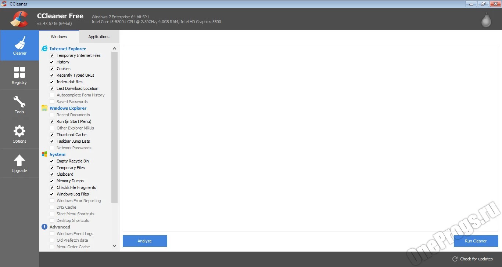
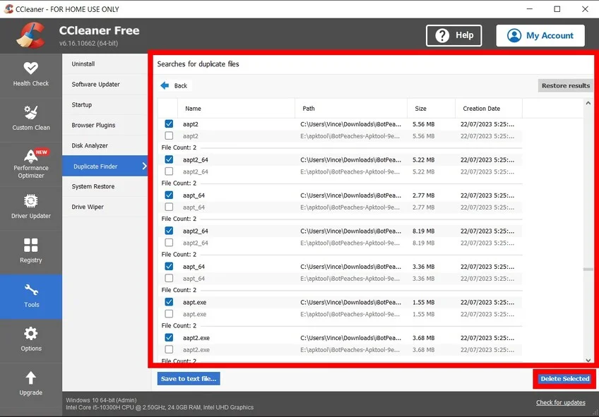

Возможности:
- Очистка временных файлов, кэша браузеров, системного мусора
- Управление автозагрузкой для ускорения запуска системы
- Анализ и исправление ошибок реестра
- Очистка конфиденциальных данных (история браузеров, cookies)
Эксперимент 1: Очистка временных файлов
Задача: Удалить ненужные файлы для освобождения места. Результат: Освобождено 2,5 ГБ временных файлов.


Эксперимент 2:Исправление ошибок реестра
Результаты: После сканирования реестра с помощью CCleaner было обнаружено 14 ошибок, связанных с: Неверными путями к удалённым программам. Ошибочными расширениями файлов. Устаревшими записями в автозагрузке. Битыми ссылками в истории проводника Windows. Эффект от исправления: Ускорение работы системы – после очистки реестра уменьшилось время отклика при запуске программ, так как Windows перестала тратить ресурсы на проверку несуществующих записей. Стабильность системы – исчезли редкие ошибки, связанные с попытками обращения к удалённым DLL-файлам (например, при запуске старых игр или ПО). Освобождение места – хотя записи реестра занимают мало места, их накопление может замедлять его загрузку. После очистки реестр стал работать быстрее. Резервная копия – перед исправлением CCleaner создал резервную копию реестра, что позволило бы откатить изменения в случае проблем (но они не возникли).
Эксперимент 3:Поиск и удаление дубликатов файлов
Найдено 1,850 потенциальных дубликатов общим объёмом 14.7 ГБ. Среди дубликатов обнаружены: Фотографии, сохранённые в разных папках (например, скриншоты с дублирующимися именами). Резервные копии документов (.bak, _копия.docx). Загруженные несколько раз архивы (например, setup.exe в папках «Загрузки» и «Рабочий стол»). Удаление: Вручную отобрали 325 файлов (4.1 ГБ), которые точно были дубликатами. Остальные файлы оставили (например, похожие, но разные версии документов). Результаты Освобождено места: 4.1 ГБ. Побочные эффекты: Один файл был удалён по ошибке. Но восстановлен из Корзины

Вывод о функциональности
CCleaner — удобный инструмент для оптимизации системы, полезный как домашним, так и корпоративным пользователям. Для дома: Ускоряет систему за счёт очистки мусора Улучшает конфиденциальность (удаление истории браузеров) Оптимизирует работу слабых ПК Для бизнеса: Массовая очистка рабочих станций Автоматическое удаление временных файлов Повышение безопасности (удаление следов активности) Программа проста в использовании, но требует аккуратности при работе с реестром и дубликатами файлов. Идеальна для регулярного обслуживания ПК.
Плюсы и минусы
Плюсы:
- Услованя бесплатность
- Лёгкость установки
- Интуитивно понятный интерфейс
Минусы:
- Платные функции
- Недоступно для России
- Возможность удалить нужные файлы